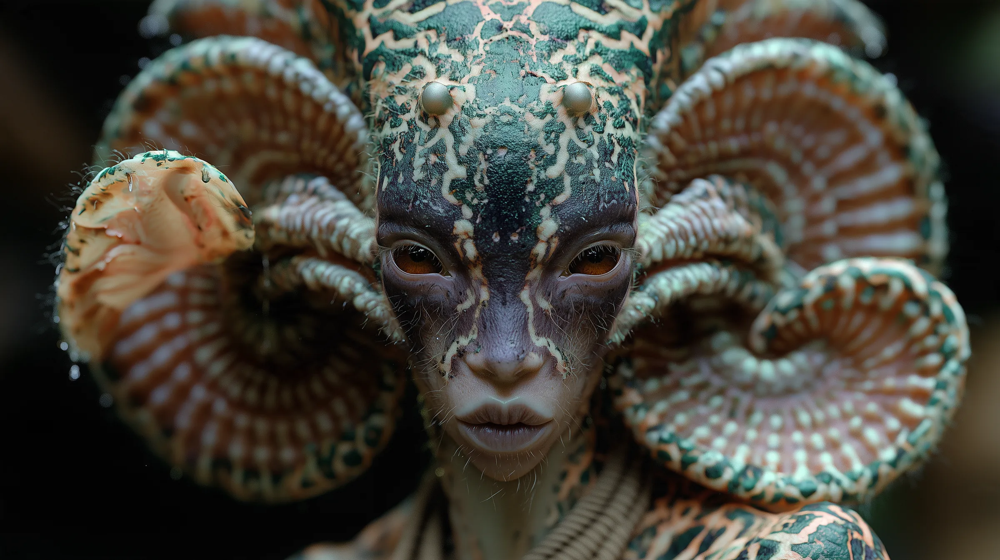
About the project
A parallel world that reaches ours through AI.
Since 2022, Nakãya has grown from a series of images into a living mythology, told through film, immersive installations, music and community. Its message is simple: everything is connected.
200K+
Followers on Instagram
2.3M+
Views on the 2025 trailer
2023
Swedish Design Award, People’s Choice winner
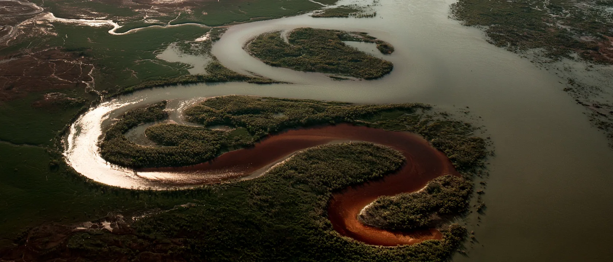
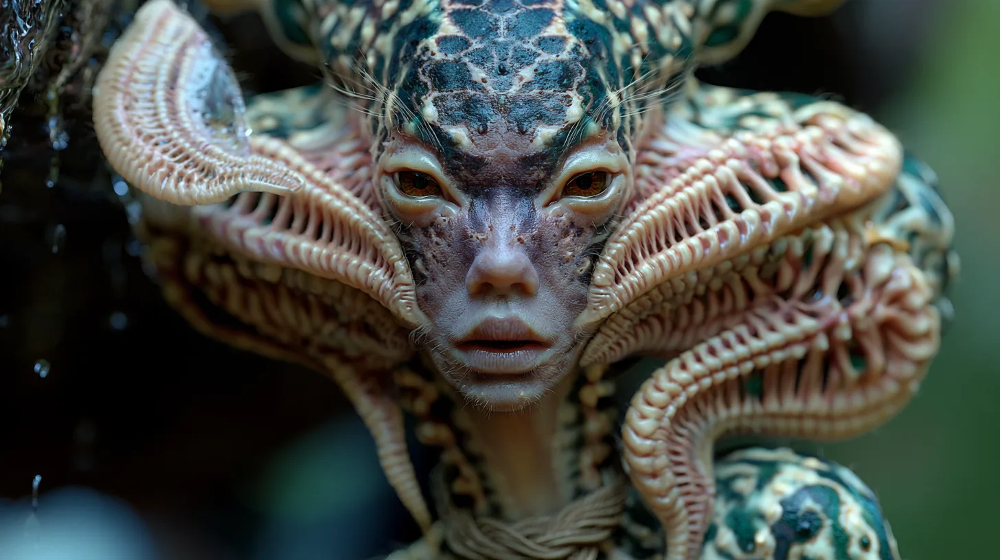
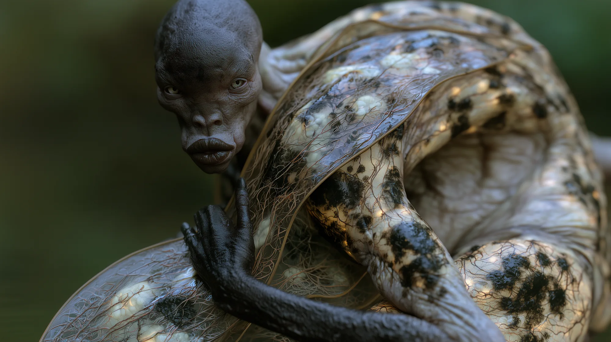
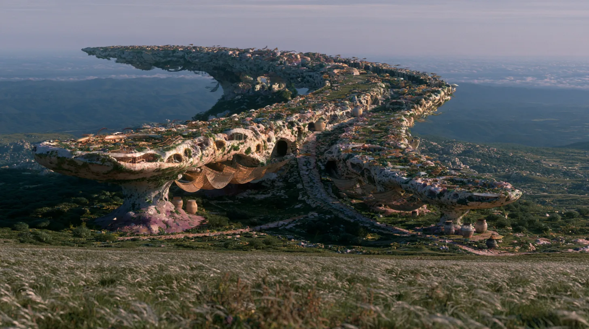
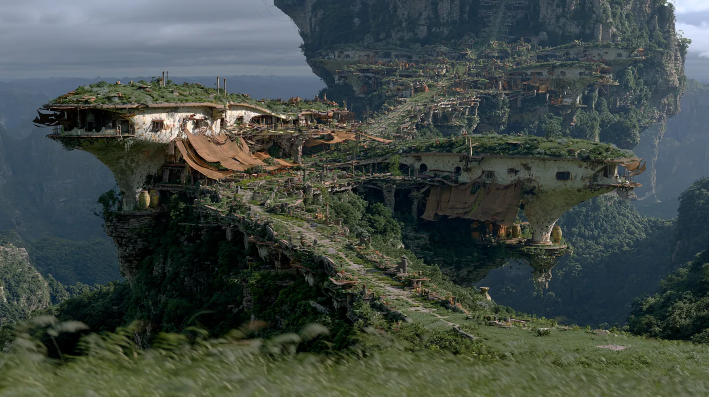
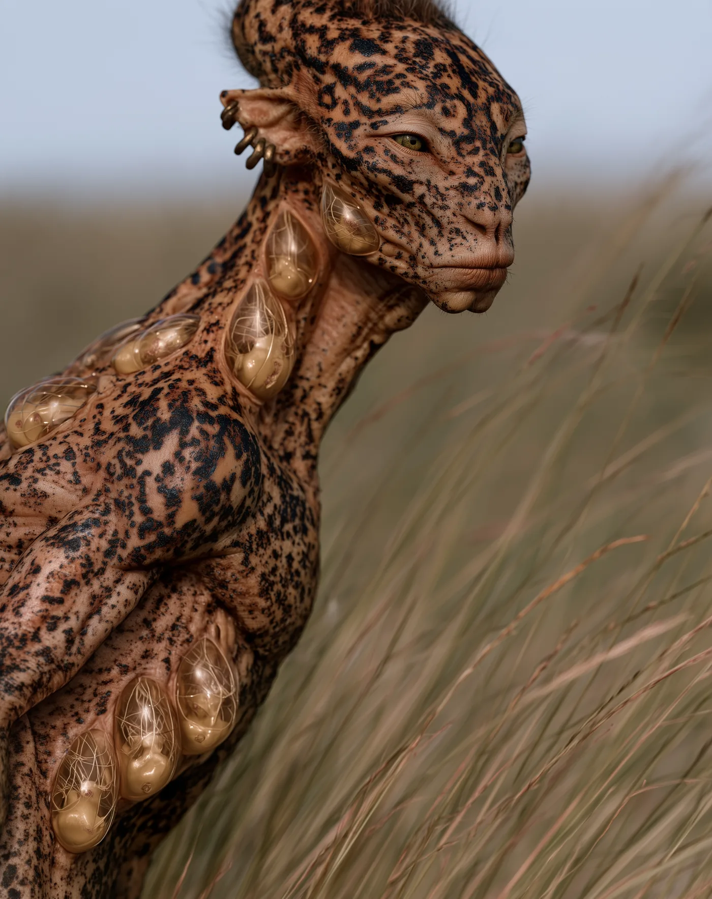
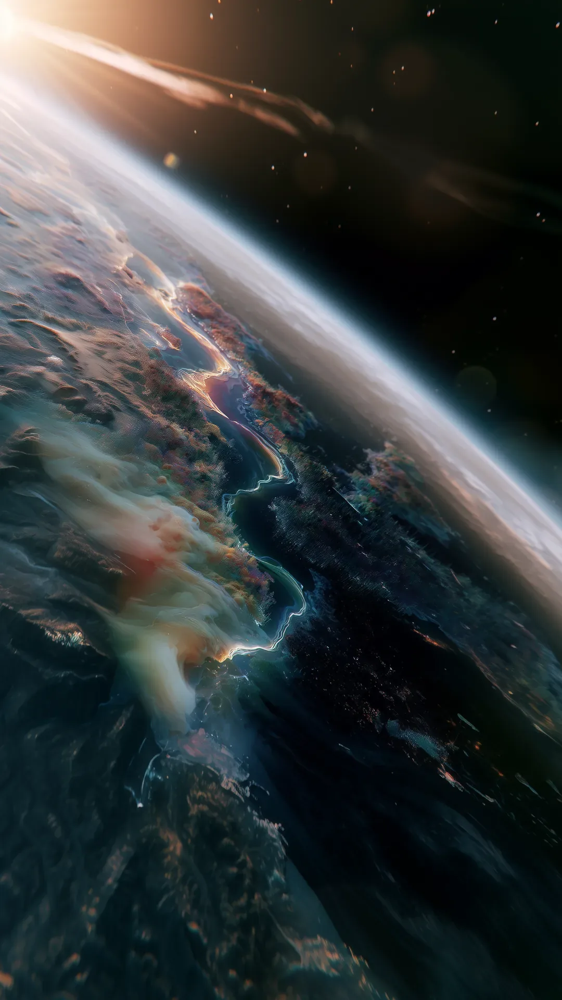
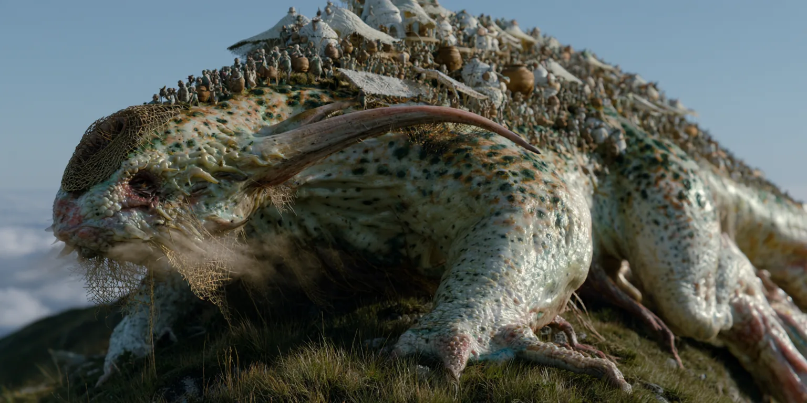
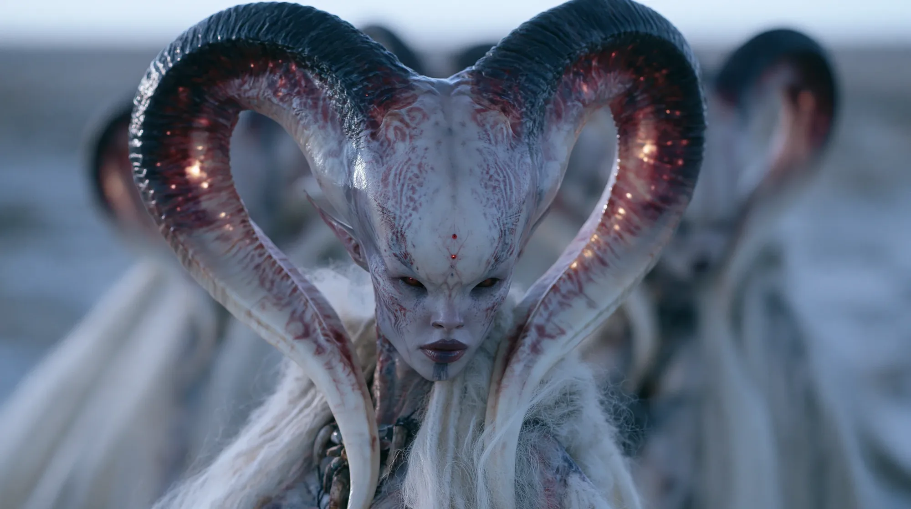
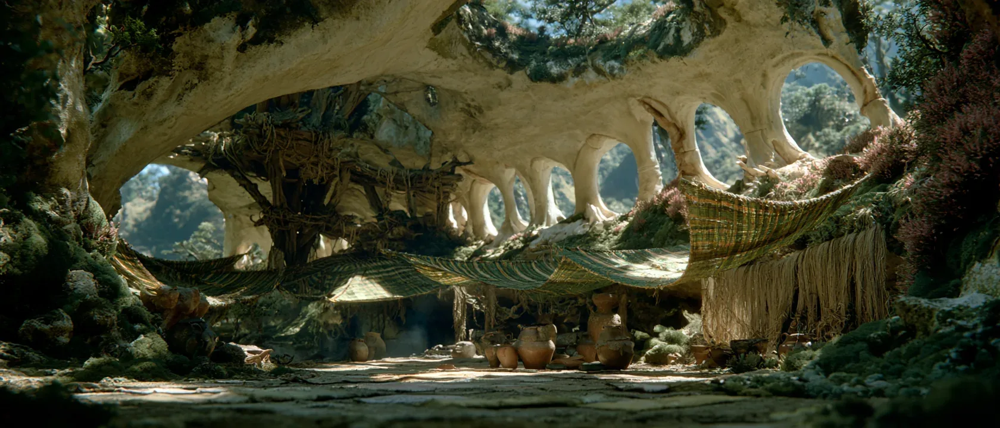
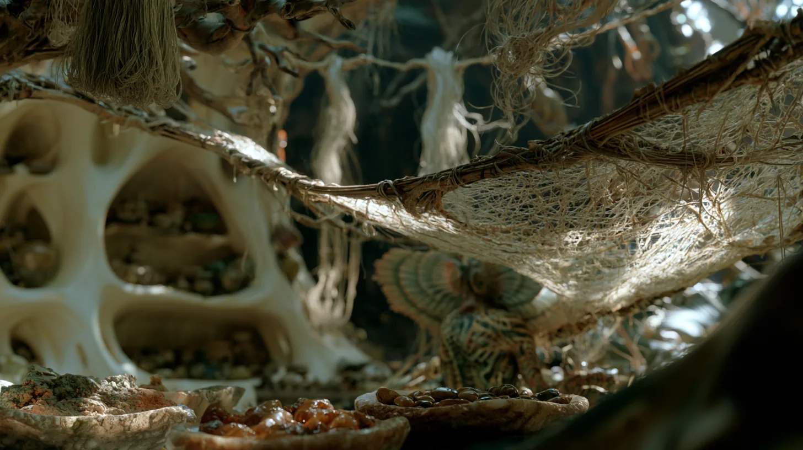
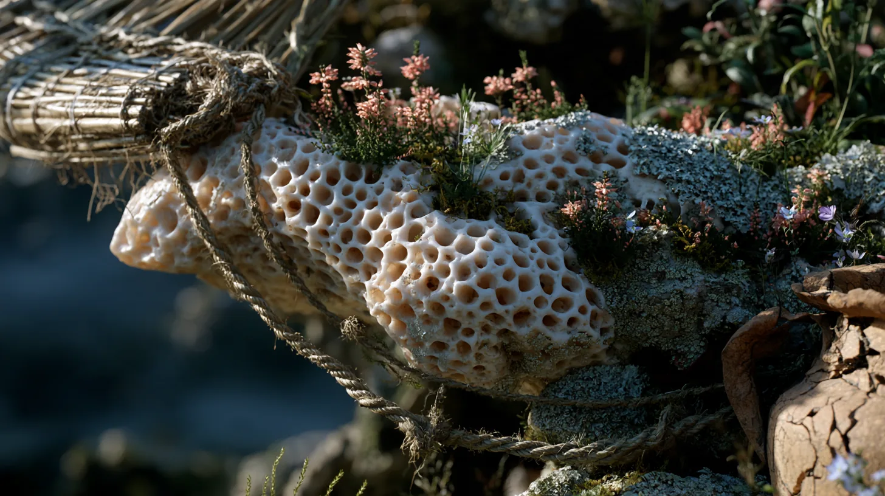